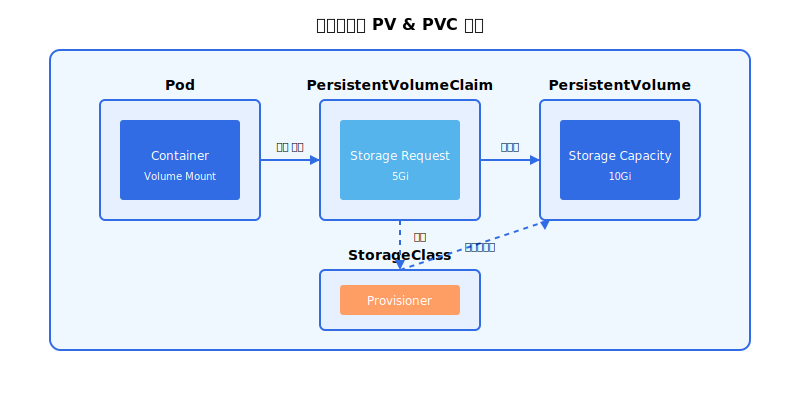

1. 쿠버네티스의 확장성 및 스케일링
-
수평적 확장 (Horizontal Scaling):
쿠버네티스는 Pod의 수를 자동으로 늘려 트래픽 증가에 대응합니다. Deployment에 정의된 replication 설정에 따라 자동으로 새로운 Pod를 생성하고, 이전 Pod를 복제하여 트래픽을 분산합니다.
Deployment 예시
apiVersion: apps/v1 kind: Deployment metadata: name: nginx-deployment spec: replicas: 3 # Pod 복제본 수 selector: matchLabels: app: nginx template: metadata: labels: app: nginx spec: containers: - name: nginx image: nginx:1.14.2 ports: - containerPort: 80 -
자동 스케일링 (Autoscaling):
CPU 사용량, 메모리 사용량, HTTP 응답 시간 등을 모니터링하여 Pod의 수를 자동으로 조정합니다. Kubernetes Horizontal Pod Autoscaler (HPA)를 사용하여 이를 구현할 수 있습니다.
HorizontalPodAutoscaler 예시
apiVersion: autoscaling/v2 kind: HorizontalPodAutoscaler metadata: name: nginx-hpa spec: scaleTargetRef: apiVersion: apps/v1 kind: Deployment name: nginx-deployment minReplicas: 1 maxReplicas: 10 metrics: - type: Resource resource: name: cpu target: type: Utilization averageUtilization: 50
2. 쿠버네티스의 헬스 체크 (Health Checks)
-
Liveness Probe:
Pod가 정상적으로 실행되고 있는지 확인합니다. Liveness Probe가 실패하면 Kubernetes는 자동으로 해당 Pod를 재시작합니다.
-
Readiness Probe:
Pod가 트래픽을 처리할 준비가 되어 있는지 확인합니다. Readiness Probe가 실패하면 Kubernetes는 해당 Pod에 대한 트래픽을 중단합니다.
-
Startup Probe:
애플리케이션이 완전히 시작되기 전에 Pod를 재시작하지 않도록 하는 데 사용됩니다.
Probe 구성 예시
apiVersion: v1
kind: Pod
metadata:
name: web-app
spec:
containers:
- name: web-app
image: web-app:latest
ports:
- containerPort: 8080
livenessProbe:
httpGet:
path: /health
port: 8080
initialDelaySeconds: 30
periodSeconds: 10
readinessProbe:
httpGet:
path: /ready
port: 8080
initialDelaySeconds: 5
periodSeconds: 5
startupProbe:
httpGet:
path: /startup
port: 8080
failureThreshold: 30
periodSeconds: 10
3. 쿠버네티스의 스토리지 관리
-
Persistent Volumes (PV) & Persistent Volume Claims (PVC):
Pod가 데이터를 영구적으로 저장할 수 있도록 지원합니다. PV는 물리적인 스토리지 리소스를 나타내고, PVC는 Pod가 PV를 사용하겠다는 요청입니다.
 -
Storage Classes:
다양한 스토리지 유형 (SSD, HDD 등)을 쉽게 사용할 수 있도록 지원합니다.
PV, PVC 및 Storage Class 예시
# Storage Class
apiVersion: storage.k8s.io/v1
kind: StorageClass
metadata:
name: fast
provisioner: kubernetes.io/aws-ebs
parameters:
type: gp2
---
# Persistent Volume
apiVersion: v1
kind: PersistentVolume
metadata:
name: pv-storage
spec:
storageClassName: fast
capacity:
storage: 10Gi
accessModes:
- ReadWriteOnce
hostPath:
path: /data
---
# Persistent Volume Claim
apiVersion: v1
kind: PersistentVolumeClaim
metadata:
name: pvc-storage
spec:
storageClassName: fast
accessModes:
- ReadWriteOnce
resources:
requests:
storage: 5Gi
4. 쿠버네티스의 네트워킹
-
Services:
Pod 간 통신을 위한 네트워크 규칙을 정의합니다. Service 타입으로는 ClusterIP, NodePort, LoadBalancer, ExternalName 등이 있습니다.
-
Ingress:
외부 네트워크에서 클러스터 내부의 Services에 접근하기 위한 규칙을 정의합니다. L7 로드밸런싱 및 도메인 기반 라우팅을 지원합니다.
-
Network Policies:
Pod 간의 네트워크 트래픽을 제어합니다. 이를 통해 특정 Pod 간의 통신만 허용하도록 설정할 수 있습니다.
네트워킹 구성 예시
# Service
apiVersion: v1
kind: Service
metadata:
name: my-service
spec:
selector:
app: my-app
ports:
- port: 80
targetPort: 8080
type: LoadBalancer
---
# Ingress
apiVersion: networking.k8s.io/v1
kind: Ingress
metadata:
name: my-ingress
spec:
rules:
- host: example.com
http:
paths:
- path: /app
pathType: Prefix
backend:
service:
name: my-service
port:
number: 80
---
# Network Policy
apiVersion: networking.k8s.io/v1
kind: NetworkPolicy
metadata:
name: db-policy
spec:
podSelector:
matchLabels:
role: db
policyTypes:
- Ingress
ingress:
- from:
- podSelector:
matchLabels:
role: frontend
ports:
- protocol: TCP
port: 3306
5. 쿠버네티스의 고급 기능
-
Operators:
복잡한 애플리케이션을 쉽게 배포하고 관리할 수 있도록 지원합니다. 데이터베이스, 모니터링 시스템 등의 상태 저장 애플리케이션을 관리하는 데 특히 유용합니다.
-
Helm:
Kubernetes 애플리케이션 패키징, 배포 및 관리를 위한 패키지 관리자입니다. 복잡한 애플리케이션을 단일 명령으로 설치할 수 있도록 해주는 차트(Chart) 기능을 제공합니다.
Helm 사용 예시
# Helm 레포지토리 추가 $ helm repo add bitnami https://charts.bitnami.com/bitnami # 애플리케이션 설치 $ helm install my-release bitnami/wordpress # 애플리케이션 업그레이드 $ helm upgrade my-release bitnami/wordpress # 애플리케이션 삭제 $ helm uninstall my-release -
Service Mesh (Istio, Linkerd):
Service 간 통신을 관리하고 보안 및 트래픽 제어를 제공합니다. 마이크로서비스 아키텍처에서 서비스 간 통신의 복잡성을 줄이고, 보안, 관찰성, 트래픽 제어 등을 구현할 수 있습니다.
서비스 메시(Istio)의 주요 기능
- 트래픽 관리: 라우팅, 로드 밸런싱, 리트라이, 타임아웃, 서킷 브레이킹
- 보안: mTLS, 인증, 권한 부여
- 관찰성: 메트릭, 로그, 트레이싱
- 정책 적용: 속도 제한, 할당량